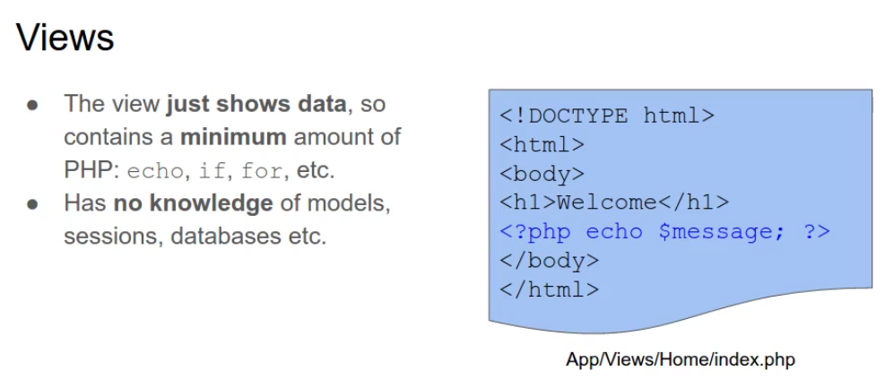
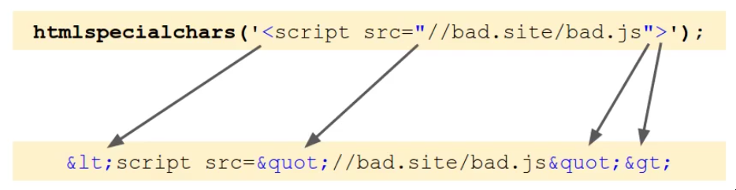
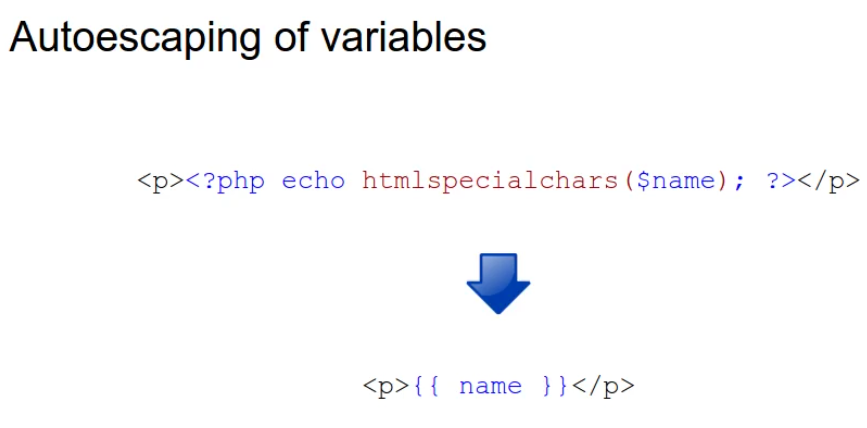

Views
1-Views are what the user sees on the screen
2-They present data to the user
View files
1-Contain PHP and HTML, But just enough PHP to display data
2-Easy for a designer to work on the view files separately
------------------------------------------------------------
Display a view: create a class to render views and use it in a controller
Controllers and views
1-The controller doesn't write any output(HTML)
2-It loads and outputs a view file, which is what contains the content(HTML, JSON, XML etc)

Views
-->The view just shows data, so contains a minimum amount of PHP: echo, if, for, etc
-->Has no knowledge of models, sessions, databases etc

------------------------------------------------------------
Output escaping: what it is, why do it, and how and when to do it


How does HTML work?
-->An HTML file contains both content and commands:
1-The content is what you see in the browser

2-Commands are used to markup content, or insert images, scripts etc:

-->Commands are enclosed in tags: <h1>, <em>, <div> etc
-->Tags are wrapped with the < and > characters
-->Writing special characters in code like 1<2 the browser wouldn't understand that one is less than two but it thinks that beginning of tag
HTML entities
-->Commands that insert special characters:

-->so one is less than two: 1 < 2
Output escaping
-->Convert <, > and " into HTML entites

htmlspecialchars()
-->Fortunately the htmlspecialchars() function does this for us

----------------------------------------------------------
Pass data from the controller to the view
1-The controller passes data to the view
2-The view simply diplays the data

Extracting variables from an array
 -->We pass data as an array because we don't know how many variables we are going to have so in the view render method we need to convert the associative array into individual variables
-->We pass data as an array because we don't know how many variables we are going to have so in the view render method we need to convert the associative array into individual variables
----------------------------------------------------------
Templating engines: What they are and how they can improve your PHP
What is a template engine?
-->Tool that helps to separate application code from presentation code
-->Templates(views) contain no PHP at all: just HTML and simple tags to show data.

What are the advantages?
1-Simpler, easier syntax-->easier to code and read, less prone to errors
2-Autoescaping of variables-->more secure
3-Template inheritance-->simpler templates, easier to maintain
4-No PHP in the templates-->Designers don't need to know PHP
Simpler syntax: displaying variables

Simpler syntax: displaying collections

Automatically autoescaping of variables

Including a common header and footer

-->The disadvantage of this you got opening and closing tags in different files which is hard to maintain. with a template engine you can use something called template inheritance

This means creating a base template, and then extending it like this. This makes it much easier and cleaner
---------------------------------------------------------
-->it's recommended if you have a lot of files in view folder to use template engine like Twig to make code much cleaner
---------------------------------------------------------